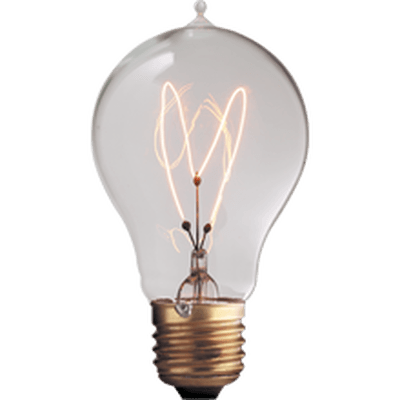

Why are kids more creative than adults? 
They don't know what is impossible...
One of the big reasons that kids are so creative is because they don’t know what is impossible.Especially younger ones think that anything they see or hear from a movie or a story is one hundred percent true. Because of this any imaginative ideas or crazy pieces of art they do are encouraged by their parents or teachers. Kids think that they are able to do anything without knowing a limit, which allows them to have a much more wild imagination.On the other hand adults now all types of rules, regulations, laws and many more types of restrictions. Any type of problem that is known as unsolvable they don’t even bother to try and fix it. Not knowing what is impossible can allow so many more opportunities to be creative.
They have a different take o things...
When an adult sees something, they see it as what it really is or one of the more realistic versions, but a younger kid would see it as maybe a monster, an alien or something else that isn’t real. For example right outside of my house there is an electric wire attached to the telephone pole. When I was younger I always thought that it looked like an elephant and so did my siblings, but my parents never thought it looked like anything, to them it was just a random telephone wire. There are many ways that this could happen weather it is a bed that in a kids mind looks like a trampoline, or action figures that look like real superhero, they are so creative and think of things so differently than an older people.
Think like hhildren...
Think of life as a fill in the blank question. You can pick anything but it has to fit the rest of the sentence. If you think like a kid, your word to fill in the blank will be more interesting than if you are thinking like an adult. We need more childlike answers because then we can have so many more crazy ideas. Think of what the world could be like with everybody thinking like children. If you had the smarts of an adult and the imagination of a kid your limits are almost endless because a kid knows that almost anything is possible. It is also important to think like an adult but we have so many people thinking like adults if you lead more creativity into your life imagine all of the amazing inventions and adults would have if they had more imagination.
The difference...
Adults think they are so limited, kids think they are so free, all of the kids in the world have such a different perspective of almost everything, there is such a difference in all of our ways of thinking and doing. There is a difference in how our imagination works and thinks. I asked my little brother who is 9 years old to draw a picture and I also asked my grandma to draw a picture in these drawings you can see the difference and lack of creativity in the one my grandma drew and you can also see all of the imagination and creativity expressed in my little brother’s drawing.